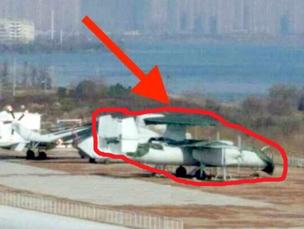
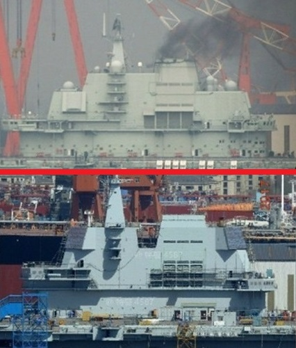

共軍的第一艘自製航母，自2013年開工，2015年進船塢組裝，終於在四月26日正式下水。早先有很多軍迷猜測，典禮會在四月23日中共海軍節舉行，但是因爲大潮還不到，共軍依實際需要決定了時間點，沒有爲了無謂的虛榮去搞表面功夫。
我早在三年前就解釋過，這艘001A級（最近有傳聞說型號名稱剛被改為002，不過這只是換個名字，沒有實際意義，無須過度解讀）017號並不在中共海軍原本的建軍計劃裏，是胡錦濤主持的中央軍委依照戰略機遇期可以持續到2020年的預估，而特別要求增建的。其目的是在2020年能有兩個完整的航母戰鬥群，亦即對任何突發事件，能有一艘航母可做及時反應。如果己方有戰略主動權，則兩艘可以協同出擊。與它配套的055級防空艦應該會在年底下水，095級核動力攻擊潛艇也很可能在2020年入役，再加上下面會詳說的艦載預警機，到2020年，共軍的航母戰鬥群將會是完整而强大的，遠勝於除了美囯之外的任何其他海軍。
017號下水後，有美國智庫宣稱它只有Ford Class戰鬥力的1/3。其實這種籠統的陳述沒有太大的意義，真正要比較戰鬥力，必須針對特定任務做分析。美軍航母的主要任務，是到地球的另一端去打擊不聽話的中小國家；如果001A級也被派給同樣的任務，那麽因爲滑躍式甲板有停機數量小和起飛重量低的雙重缺點，單位時間彈藥投擲量的確會低於Ford Class的1/3。但如果是爭取制空權，因爲空對空彈藥尺寸小，起飛重量不是問題，這時001A級的戰力就超過Ford Class的1/3了。在共軍的作戰計劃裏，001A級最好還要依托陸基武力（包括導彈和戰機）進行A2AD（海域拒止）作戰，那麽它的戰機出勤率較低，就更不成問題。其實美國人沒有明説的事實是，中共航母戰鬥群體系完整、裝備先進，和美軍處於同一級/代，差別只在數量（包括航母數量、艦載機數量和艦載機出勤率）上，而數量差距顯然是會隨時間很快縮小的。
從技術層面來看，017號為了追求早日服役、減低技術風險，基本上照抄了遼寧號的總體設計，只在若干重點細節上做了優化處理（這沒有什麽丟臉的；美軍的Ford Class爲了省錢、省時，也同樣繼承了Nimitz Class的總體設計，只在若干重點細節上做了優化處理）。目前還不知道内部的改動有多大，機庫放大多少、蒸汽輪機功率是否提高，都還是純理論上的臆測。我在此只討論外部可見的改進。
首先，有謠言說017號的滑躍甲板角度從遼寧號的14°降低為12°。蘇聯設計Kuznetsov號時，用的是12°甲板，後來發現SU-33（J-15的前身）可以承受更高的縱向加速度，所以在建造二號艦（即遼寧號的前身Varyag）時改爲14°。如果現在共軍又改囘12°，在論壇上有兩種揣測：1）J-15的結構强度不足，12°才是最優的；2）這是爲結構强度遠低於J-15的預警機做準備。我認爲J-15與遼寧號配套發展多年，結構强度是基於14°而設計的，如果真的沒法加强，遼寧號的甲板早已改了。既然遼寧號的甲板沒改，那麽J-15的强度是足以應用於14°甲板，現在爲了一點點性能優化而重新設計甲板+機體的組合，完全沒有道理（改變機體結構是挖心破腹的大手術，非同小可）。艦載預警機則是航母戰鬥群的重要組成部分，雖然用在滑躍甲板航母上沒有前例，但是螺旋槳飛機短場起降能力不差，理論上從滑躍甲板起飛並沒有障礙，只是需要比J-15稍長的跑道（參閲下文），所以我覺得這才合理。當然，謠言也可能就是謠言，017號用的還是14°滑躍甲板。

今年年初在武漢“陸上航母”出現的最新版艦載預警機原型。雖然它是針對彈射甲板設計的，但是如果能上017號，將會大幅改善其戰力。
017號的著陸區也有所改動，攔阻索由四條改為三條。這是跟進於Ford Class（稍早的美、法航母也已經嘗試過）的變動，原因是最後一條攔阻索很少用到，而且離甲板邊緣太近，即使鈎住了也有可能落海，不如直接放棄重飛。減少一條攔阻索，可以省下不少重量和空間。在017號上還有另一個好處，就是方便新設一個中距離的滑躍起飛點，給預警機使用。
017號與遼寧號最大的不同，還是在於艦島。整體縮短了約10公尺，所以停機位比遼寧號多了一個；但是比起Ford Class來，依舊差得很遠。一方面烟囪占據了10公尺左右（核動力航母不需要烟囪），另一方面優化不足，和美軍相比還有10公尺長的空間應該移到甲板下。此外，Ford Class的艦島已被後移到艦尾著陸區旁的角落，這是爲了清出甲板中段在著陸區和彈射器之間的所有空間，當航母在回收戰機、重新加油挂彈出動的過程中，飛機只須停放一次，不必多次轉移，可以節省不少時間和人員。共軍的下一代018號航母還是常規動力，再怎麽優化仍然不可能達到美軍的地步，必須等到改裝核動力（020號？）才可能趕上。

001（上）和001A（下）艦島對比。
艦島上的相控陣雷達從346型（也用於052C）升級為346A型（同052D），並改爲45°斜角佈置。346A大致相當於Ford Class的AN/SPY-4，但是美軍爲了省錢，只裝了3面陣列天綫，所以每個陣列必須掃描120°，在邊界附近波束强度會有很明顯的下降。共軍則采用了更豪華的4面佈置，每個陣列只負責90°。這是因爲中共在裝備采購上有很明顯的價格優勢，4面346A價格是5億，美軍的3面陣列（含AN/SPY-4和AN/SPY-3，不過後者是較小的X波段陣列，價格較低）也是5億，只不過前者是人民幣，而後者是美金。其實美國連3面陣的價格都承受不了，而且航母實在用不上X波段陣列（AN/SPY-3原本是設計來為半主動的標準-2型防空導彈提供火控引導），之所以裝上AN/SPY-3+AN/SPY-4，是因爲它們原本是為Zumwalt級驅逐艦開發的，Zumwalt的訂單被大砍成3艘之後，有剩餘的雷達沒有軍艦可裝，所以廢物利用，硬是上了Ford號。從下一艘CVN-79（Kennedy號）開始，將改裝原本為LHA-8兩棲艦開發的S波段EASR（Enterprise Air Surveillance Radar，這是廠商的商標，美軍還沒有賦予正式編號）。EASR基本上是AN/SPY-6（Raytheon的S波段陣列雷達，大致等同於Lockheed的AN/SPY-4，將裝備於Burke III）縮水4倍（從37個模塊減爲9個模塊）的簡化版，價錢在1億美元左右，還是比346A貴，性能則差了15dB。
017號艦島前緣的航海艦橋改為雙層，據稱是爲了給艦隊指揮中心自己的獨立空間。美軍航母戰鬥群的空戰由巡洋艦負責指揮（詳細來説，美軍巡洋艦上的是所謂的AWC，Air Warfare Command，空戰指揮部，它並不負責對地打擊或反潛；但是現代的美軍航母戰鬥群，已經不再有專職的反潛護衛艦，除了防空巡洋艦之外，就是防空驅逐艦，在執行它們的正業防空任務時，連帶負責攔截任務的戰鬥機，都由AWC統一指揮），空情指揮中心設在巡洋艦上，共軍或許覺得由航母自己指揮更爲合理。如果真是如此，那麽共軍航母裝備全尺寸的相控陣雷達就很有道理了，055級被叫做“大驅”而不是“巡洋艦”也符合這個脚本。總之，目前有三個旁證指出共軍戰鬥群的一切任務都將由航母自己直接指揮，055只純粹負擔防空驅逐艦的護衛責任。美軍不這麽做，一是爲了保證航母艦島的絕對小型化，二是容易讓航母本身保持電磁靜默。一般非專家往往不了解航母安全的一大保障，來自其機動和隱蔽所造成的位置不確定性。美軍的經驗是，自中途島戰役起，航母對決，先定位對方者勝。當年蘇聯準備狙擊美軍航母的過程中，最大的困難也是對其定位。共軍可能沒有把得失想清楚，只依據最大的軍艦應該做旗艦的“常識”而做了決定。當然美國有全球海洋監視衛星網，光是電磁靜默不一定管用，但是如果作戰的對象是印度或日本這樣的次等軍隊呢？
目前017號的桅杆看來很乾净，沒有雜七雜八的天綫，不過這是因爲舾装還沒有完成，未來幾個月必然會多出好幾個圓形天綫罩。055級的共形天綫似乎是共軍首例，017號用的應該還是052D級別的舊電子系統。不過共形天綫對空間、重量、電力供應和電磁兼容有很大的好處，018號必然會采用。美軍則還沒聽説會上航母，這一方面是美國航母有巡洋艦來分擔指揮艦隊的任務，一方面是爲了省錢。
最後再重提一下共軍航母對臺灣的意義：這裏的重點是航母是遠洋作戰的工具，臺灣離大陸太近，航母在臺海戰役中的性價比很低，沒有針對性。當然既然已經建了，打起仗來還是會想辦法用上，但是只會有次要的作用。臺灣愚民對共軍航母風言風語，説什麽可以用雄三剋制，這就好像幾隻螞蟻議論屋主穿的新工作服，說我們可以讓蛀蟲把它咬破。其可笑之處有三：1）新衣不是為了給螞蟻看而穿的；2）屋主已經買了大批的樟腦丸和殺蟲劑，就擺在明處，但是螞蟻視而不見；3）就算屋主準備穿這件工作服來噴殺蟲劑，先派蛀蟲咬破衣服仍然不能挽救螞蟻的命運。
coolsyang
2017-04-30 00:00
实验舰与实用鑑并无衝突，中美二者皆如是，只是美国超前太多，好在共匪追击速度也蛮惊人。
我從來沒説過遼寧艦不能用在實戰。各種跡象顯示，共軍也的確準備在2020年後，遼寧號必須負擔實際的戰備任務。
crztrader
2017-04-30 00:00
有个想法，可否做个快速升降平台，用油压等方式将舰载机顶到某个高度，再让飞机加力衝出去，这样可行吗?
不可能。油壓不適合快速運動，否則液壓油的蒸汽會自發爆燃。這也是彈射器不能用油壓的原因。
Orientalcrimson
2017-05-01 00:00
请问王先生,您提到美国航母战斗群指挥者为巡洋舰而非航母本身,是为了让航母保有"电磁静默",而共军的设计非如此. 请问您认为共军在日后建造更大型航母时,会採用美国航母的编制,把指挥权交给巡洋舰(或055驱逐舰)吗? 另外请教您, 共军的航母可能需要陆基飞弹及"飞机"的支援,以目前航母上的J15为空优机,请问陆基飞机需要给予哪方面的支援?
我覺得他們應該改，但是看來不會。
2017年4月29日，凤凰卫视《周末龙门阵》，主题《重器入水》，腾建群，王云飞，王云飞原话说：“......上翘角比原来减少了2度......”。链接是：
phtv.ifeng.com/.../zmlmz/ 王和藤都是海军背景，不会公然在电视上胡说吧！
至于翘角减低是否有缩短起飞距离，我也怀疑。
但是，翘角改小对起落架寿命有帮助是肯定的，我自己也是学物理的。至于降落时，肯定是对起落架造成主要损害，这是事实。使用拦阻索迫降，主要受力点是索勾与机体大梁连结件。
謝謝。
crimson1101
2017-05-03 00:00
I've been reading your blog for past few years and truly appreciate your effort in shedding lights on a rather mysterious PLA (actually, all military are). However, I do have a request to made. Can you tell us something about quantum computing? I've read online that many nations are investing heavily. I understand the qubit part but it's the hardware that I don't understand. I'm not an engineer so my main question is does this requires new material/new manufacturing techniques? How will this impact the current computer industry? Also what is China and US progress on this field? Is it still more on Sci-Fi stage or are we close to see commercialization?
The science behind Quantum Computing is well understood, but it is very early in its engineering development cycle. My guess is that no practical application will be realized for 20 more years.
goldshore
2017-05-04 00:00
@纳兰
是的。不會為琉球而開戰，但是開戰了就可以拿下琉球。
关于一则对新型号战机存在的推测的新闻。
http://mil.eastday.com/a/170503123453835.html 这篇文章中给出了一个央视电视节目的截图，这个节目中有几位成飞沈飞的核心科研人员作为嘉宾出场。根据文章和电视节目的截图以及截图中的字幕与时间，可以确定仍然有一款未正式发布的军机。虽然作者推测是歼31舰载版，但我不认为是。重点在于截图中介绍沈飞的副所长时用的是“谋型号飞机总设计师”，但字幕有显示这是今年五一劳动节的纪念节目。所以在此时间点上歼31早已算是发布完成了，没理由写某型号。另外几位嘉宾都写了自己负责的机型。而这位女士又是沈飞的人，没理由轰20是沈飞负责。综上恐怕舰载机会是一种新机型，但由沈飞设计。（希望这只是猜想）
很明顯是J-11D的總師。空軍不買J-11D，轉而去外購SU-35，以致J-11D前途不明朗，所以還沒有正式公開。
www.zhihu.com/question/62106278/answer/195186513 蒸弹和电弹面对两套不同的舰载机设计需求指标，也许是不给蒸弹装机机会的原因。电磁弹射器的直线电机会在大约100米长的行程中持续提供100吨左右的牵引力来弹射重型舰载机。因此要求前起落架和相关机体承力结构的加强标准是3倍重力加速度的标准，比如3g2000次。蒸汽弹射器的开槽气缸的出力特性是开始时压力最大，达到大约200吨，然后快速衰减。这样的话就需要把机身结构加强到6g。要求提高了一倍。
咸水战斗机的机体是可以承受主翼升力方向上7g加速度的，大约几十次。但是舰载机前轮牵引方向受力的情形却仍然需要额外地付出大量追加的结构重量。因为承力点和承力方向的不同，承力结构都要重新计算修改，包括主起落架、着舰鉤及其连接部在“受控坠毁”时的受力要求也是。舰载机的机体为了满足航母暴力弹射与暴力着落的需求，比同型号岸基战斗机结构重量多出来一两吨，结果升力方向的承力极限却从9g降低到了7-7.5g，导致空战狗斗能力反而下降。前起落架航向3g和6g的结构加强需求相差大约几百公斤的结构重量。
现在美军的新型舰载机就遇到了福特级航母的适配问题，福特级的电弹弓只需要3g，那么新塑胶虫和肥电能不能减轻一部分结构重量换取更强一点的作战性能和更低的制造成本呢？Nope.美军现在的结论是新舰载机必须要同时适配福特级和尼米兹级。这是为了每个舰载机联队都能够灵活的被任意的航母所调度。如果玩两套标准，那么可能需要多买一两百架飞机才能满足周转。这些新买的飞机并不能形成额外的战斗机，只是用于加强周转调度，这个代价太高了。于是升级电弹的好处有一部分美军一直无法享受到，这种情况将持续四十来年，直到老尼米兹级完全退役或行将完全退役的时候。
如果PLAN决定一艘蒸弹都不建的话，毫无疑问是得罪了一批人和单位，也浪费一大笔专案研发支出。我想配套舰载机的问题就是最大的决定因素了。能绕开美军现在遇到的这个大坑，即使多等一等也值的。何况，也许电弹自身进度从未落后，等的说法就不成立。
合理。
crztrader
2017-07-13 00:00
01网站是台湾着名的论坛网站。两个我常看的版面，新闻版与军武版。新闻版网友很多都蛮了解现在大陆的发展，在新闻版那些造谣、抹黑、反中的贴子，会被很快地集体打脸。所以新闻版觉醒青年逐渐没有声音，但仍有特定ID每天转贴大纪元、三民治、美国之音等媒体有关中国的负面新闻，然后射后不理不参与讨论。我透过这个窗口感受到很多井蛙都跳出井外，这趋势明显。另一方面，台湾人被洗脑的人数也再增加。整体是呈两极化发展。
军武版则几乎被觉醒青年占据洗版成一言堂，看看这个连结
www.mobile01.com/topicdetail.php 讨论军武要有点军事素养，军武资讯来源杂多良銹不齐，且很多是机密无法证实。所以01军版成了觉醒青年的乐园，他们在那相濡以沫互相自慰，对提出异议的言论是轮流炮轰，无视逻辑与事实。
至于楼上问Brian 转贴的文章来源。
那是01论坛军武版Charlie2020写的东西，网址是
www.mobile01.com/topicdetail.php 他也是觉醒中的一员，常常被打脸，但在军版他们都很能凹，互相支援，所以声势浩大。
只要有人在01引用王先生的文章，我都会劝告不要贴王先生的东西。王先生的文章其实他们很忌惮，只要有人引用，就有人开始抹黑攻击企图消毒。
我在新闻版看台湾民意发展，在军武版找乐趣。
和我到Guardian去瞭解英美白左對中國的抹黑，有異曲同工之妙。
singsing11
2017-07-13 00:00
请问Brian 转贴的文章来源, 我也想看看.谢谢.
這人說X波段只能用來火控，是因爲他讀了有關美軍AMDR的文章，其中X波段就只是用在火控上，所以腦補以爲全世界都如此。其實X波段專用在火控上，是美軍獨有的；原因只是必須與大批庫存的標準2型的半主動引導頭兼容。既然每艘防空艦都有X波段火控雷達，新的標準6型又反過來必須兼有半主動模式。基本上就是老技術的沉沒成本太高，無法一次性地乾净淘汰。
我想问核动力航母遇到战损能否抢修? 核动力航母都是二战后建造的, 目前还没有战场上受到攻击而抢修的实例. 核动力节约下来的燃料空间, 是否足以补偿维修上的不便? 中方是否应考虑干脆放弃核动力航母的建造计划, 扬长避短, 发挥自身的制造能力, 专注于数量以及损管维修的能力, 这可能在战时整体上收益更大.
這方面的真正專家是剪水鸌。與其由我復述，還是直接去讀他的博客能得到更完整深入的瞭解，參見https://www.zhihu.com/people/wang-xiao-hui-50-34
2022-06-21 12:30 回复
路透社卫星照片称中国正在建造新的陆上核反应堆, 如果是真的, 那核动力航母研发是开始了吧?
是。
其實航母改為核動力的戰術性好處並不大，這是因爲護航船艦和艦載機還是要燒油，航母本身續航力增加的實質意義有限，維修時間和成本卻也大幅提升，反過來減低可用來部署作戰的時間。所以核航母的實用優點反而主要在於節省那個大烟囪，方便甲板調度，但宣傳上的廣告價值可能才是中方決定研發核航母的真正戰略考慮，讀者可以拿來與多年前博客對載人登月的評論做對照。對前面所提技術性細節有興趣的軍迷則可以在剪水鸌的網站找到更詳細的論證。
同意，核动力航母实战价值增加并不多。不过，如果开始着手搞核动力航母，并假设决策层仍遵循理性原则，那很可能意味着其它优先级更高的重要军事项目进展良好，例如先进核潜艇
核潛艇的保密級別太高了，很難拿到可用來分析的資訊；不過從葫蘆島渤海船廠近年的瘋狂擴建可以得到即將批量爆發的暗示。
你是AI專業，對這一期《龍行天下》的討論有意見嗎？DeepSeek的Mixture of Experts恰恰是兩年前我討論過的可能突破方向，爲什麽美方沒有重視，你能回答嗎？
2025-01-19 11:40 回复
我先谈一谈我知道的事. MoE最早在上一代AI(统计机器学习)中就已被提出. 上一代的机器学习最终的成果是集成学习Ensemble learning. 理论已证明, 若干弱分类器(只需准确率略大于50%)可以通过集成学习变成一个强分类器, MoE就是集成学习的一种. 上一代AI主要擅长处理Tabular Data.到了这一代AI(深度学习), 当时还在Google的ilya sutskever首次提出将MoE作为神经网络中一个组件并进行尝试, 不过并无下文. 这个ilya sutskever, 就是2013年和他导师Geoffrey Hinton还有另一个学生在多伦多大学一起最早实现GPU运行多层的卷积神经网络的人, 卷积神经网络则是Geoffrey Hinton之前的博后学生法国人yann lecun所提出的. 因此, 这一代的AI, 深度学习(deep learning)实际上就是从他们开始实现起飞的. 由于能处理图片数据且效果惊人, 各大公司都来聘请Geoffrey Hinton, 据说连百度当时都来出过价. ilya sutskever拦住要去应聘的Geoffrey Hinton, 提议成立一家公司DNNResearch, 把研究成果当知识产权放进去, 让各大公司来收购. 最后Google出价最高, 收购后变成Google Brain部门, ilya sutskever就成了谷歌的员工.2015年, ilya sutskever离开Google和Altman等人一起创立OpenAI. OpenAI刚开始并不知道搞什么好, 中间还经历过Musk争夺控制权的事. 到了2017年, Google提出了Transformer模型, 反响巨大, ilya sutskever他们看到论文, 最后就决定投钱投人做自然语言方向, 从GPT一代开始一直做到第三代ChatGPT, 一炮而红.ChatGPT的爆红反过来又启发了另一波Google的员工. 2023年初, 法国人Arthur Mensch和他的其它两位大学好友不满中美两国搞AI热火朝天, 欧洲却毫无作为, 辞去Google的工作返回法国, 创立公司Mistral AI. 这家公司被马克龙和其它不甘落后的欧洲精英大力支持, 融了不少资金. 他们就把目光放到了MoE上. 到了2023年底, Mistral AI就推出了他们的AI, 成功的运用了MoE, AI模型的效率大大提高, 欧洲终于追上了美国. MoE的成功也很快吸引诸多同行采用, OpenAI没有公开架构, 但外界普遍推测采用了MoE, 当然也包括DeepSeek V2.到了今年初, DeepSeek V3成功推出. 前几天读了DeepSeek V3的技术报告后, 我目瞪口呆, 彻底死心. 这篇报告有上百的作者, 一共五十多页, 大方向的架构的确是是MoE, 但是有多达十几处效率改进. 我到现在才弄清楚一半细节. 这每一个效率改进的设计都足够发一篇中上水平的论文. 也就是说, 虽然大思路不变, 但是DeepSeek几乎把文献上能找到的, 提出的, 在每一个环节上可能改进效率的地方都做了优化"小"创新. 十几处改进累积下来就能有百倍的效率. 这个工作量已经远超过任何一个大学科研团队的能力, 只能是上百人的顶级工程师来做, 团队工程能力毫无疑问媲美OpenAI. OpenAI可是集合了美国本土加上世界各地人才, 而DeepSeek几乎只是中国大陆本土的工程师, 就能打赢. 所以Altman读了这篇论文后, 就在X上酸溜溜的暗示中国人不用尝试探索新办法, 只要汇总所有试过可能有效的办法, 然后往下改进就行了. 我可以想像他的绝望和精神崩溃,这怎么竞争得过中国人.现在回答你的问题, 为什么美国不重视做MoE? 美国怎么会不重视, 当然重视了, 美国从全世界招人才, 收购外国公司, 大学花钱培育各种创新, MoE实际上也是美国最先试验的, 后来是法国人也不甘落后尝试.无奈中国人太卷了. 每当事情发展到一定程度的时候, 中国人就能以卷王的态势碾压过来肝爆. 这件事情, 我看性质和台积电差不多.
好的，謝謝。我不是AI行内人，這些歷史進程的細節我並不熟悉，多虧你的介紹。
兩三年前我連MOE這個專業名字都不知道，全憑通用邏輯經驗，自己直覺想到概念，覺得它像是最優改進方向；現在中國把MOE的進步空間榨乾了，我想不出還有什麽其他點子能在AI Compute Efficient Frontier上節省兩個數量級的算力。你有建議嗎？當然，既然算力消耗與精確度的20次方成正比，節省兩個甚至十個數量級也遠遠不足以讓本世代的AI脫胎換骨、出現什麽本質上的提升，僅僅是決定商業競爭的勝負罷了。
2025-01-19 21:32 回复
正常, 这个领域毕竟还是聪明人多, 你想到别人也想到. 比如, 和开会的同行讨论自己几天前刚想出来的点子, 经常会有人说这个我早就试过了, 效果不行, 原因是XXX, 然后才知道难怪没人发论文. 而且现在不光是点子, 工程能力也是很重要的, 好的想法去实际操作, 需要软件工程师对GPU硬件特性非常熟悉, 钻研各种工程技巧. 有时候你也不清楚究竟是点子不对, 还是工程能力不够. 比如, 原先Nvidia对GPU上FP8低精度的计算有一些工程指南, 但是普遍都觉得训练很不稳定, 不可用, 多数都停留在BF16或者FP16(越低精度越节约内存, 但是精度下降可能导致不稳定). DeepSeek团队比Nvidia还懂GPU, 他们干脆扔掉官方指南, 自己摸索出来了FP8的计算办法, 在这点改进上效率差不多提升一倍. 拼效率的工作今后会转交给工业界去做了, 学术界已经无法竞争, 只能做验证新想法. 我这种在Directional University(无PhD项目, 没干活学生)混日子的更是不敢奢望了.
其實考慮到本世代AI的實用性遠遠大於氫動力、核聚變和量子計算所對應的零，它的從業人員在公共媒體上所作的進展預估是驚人的混亂和謙虛。一方面，這是因爲沒用的東西吹噓起來反倒沒有任何錨點，反正就是純粹詐騙，完全可以天馬行空，而AI卻真正以每年超出一個數量級算力提升的速度在持續發展中，行内人做預測很快就必須兌現，於是自然會猶豫矜持。另一方面，正因爲這個世代的AI進展太快，來不及深究理論基礎，必須當成純現象學來處理，頂多只能總結實際嘗試的經驗法則；再加上神經網絡先天是極度非綫性的，即便嘗試不出結果，也可能只是算力投入還不到Emergence threshold湧現臨界點，於是又憑空增添了很多不確定性。
我和你做這番對話的主要目的，是想要瞭解並預估未來幾年AI進展偏離Compute Efficient Frontier那條對數綫性關係的程度和機率；畢竟算力投入已經開始觸及資金和硬件技術的上限，這兩個主動變數都是可以準確估算的，那麽通過Efficient Frontier就可以簡單讀出本世代AI的潛力進程。你的介紹給我的印象是，未來幾年再次出現類似這次MOE的兩個數量級偏移的機率並不明顯大於1/2，出現超級突破的機率很小，基本可以忽略。那麽總結起來可以進一步推論，當前的中美競爭態勢基本鎖定，不會徹底翻盤重新開始競賽；換句話說，我在《龍行天下》節目中所做的“中方已經成功超趕”的結論應該會持續有效。
2025-01-21 09:25 回复
除了信息压缩角度, 模型架构上可能有进一步改进的地方, 但是要困难得多. 自然语言处理Nature Language Processing和计算机视觉Computer Vision是这一代AI发展的两个应用分支. 在CV上有个著名的生成模型stable diffusion, 可以按照用户指令生成逼真的图片. 一张600x800图片的像素大概是五十万, 如果按照NLP的做法一个一个输出token一样, 输出一个一个像素, 整个图片生成的过程将慢的无法实用. 所以CV模型结构都是放射状/树状的, 经过几轮输出, 画面从噪声中逐渐浮现出来. 能否将语言的生成过程也变成这样? 从序列一个个产生Token(花费时间O(N))变成同时多点产生Token(花费时间O(logN))? 好比要写长篇小说, 生成一个纲要, 然后同时每个写手写一部分, 这样生成的速度比一个个产生要快的多. 当然这个思路不能简单照搬, 因为一个词的信息量远比单个像素要多得多, 文字词语之间的联系可能要比图片像素间的联系更强.
不过现在不光有大模型, 还有小模型. 小模型是我认为最有意思的地方. 大模型动则数百billion参数, 而开源社区很多非常性能不错的模型, 通常只有2 billion左右参数(占用大概4GB内存). 这些小模型就连普通人都能点击使用, 在笔记本电脑上就能安装运行, 如果不算笔记本的电费和折旧, 费用成本为0. 这就有很大的潜力了. 这些小模型当然不能做复杂的推理, 你问他怎么造光刻机肯定不知道, 但是能做很多常识性的工作. 这就为软件开发提供了全新的角度, 即所谓的Agentic AI. 注意, Agentic AI并不是AI Agent, 而指的是软件内部的逻辑由AI控制而非传统编程代码中的If语句控制流程的应用.
Okay，謝謝這麽詳細的討論。所以你也贊成“AI還沒有而且可能不會有商業利潤上的‘Killer App’（也就是類似Wintel那樣的壟斷寡頭）”這個論斷；而AI對人類經濟的貢獻直接消散給個別消費者和白領勞工，我覺得是一件大好事。
至於奧數，預賽還有些套路（資格賽套路更簡單，例如美國的AIME，2024年Open AI解題成功率達到23%，DeepSeek V3突破到37%，是其不只節約算力、在精確度上也超越美國對手的明確指標之一），世界決賽所用的都是那些數學系教授一輩子職業生涯中偶爾所得的巧合妙題，不是根據套路臨時發明的。本世代AI萬變不離其宗，既然不能如棋類那樣基於簡單規則、自己無限對下，那麽頂多就是相當於開卷考試、拿整個互聯網的所有Petabyte濃縮成超級小抄，這是不可能達到人類選手高度的。
2025-01-21 10:07 回复
哦那就简单了, 即便刨除概率估算(我是乐观认为本代AI最多还能挖两个数量级), 还有额外两条保证结论的有效性 (1)大模型技术扩散速度远远快于研发, 你会的, 我很快也会, 没有秘密武器 (2)大模型技术难以形成先发垄断优势, 对, 没有killer App
是的，博客不是技術刊物，探討AI固然照舊仔細搜集事實、以供嚴謹邏輯分析，論證的目標終究在於1）對人類社會的推進有多大；2）對中美博弈平衡有何影響。
2025-01-21 12:56 回复
之前先生在留言中提到“...只要不是像在围棋规则明确的情况下自我无限对弈...”。实际上这刚好是个值得讨论的话题，不过当时DeepSeek R1模型尚未放出，讨论只限于这一代AI。现在R1已经放出来，想借机会补充下一代AI的可能方向以及对中美博弈的影响。
我們上一輪討論結束沒幾天，R１就出世，當時我也立刻注意到它與Alpha Zero的類似。我同意這明顯是一個新的、重要的進步方向，但對其實用前景有多遠就沒有你樂觀了。我認爲最可能是本世代AI即便有了這個加强，依舊只能做到輔助性的工作，只不過輔助得更多更深罷了。換句話說，我的AI三論斷（１.做不到通用邏輯智能，AGI；２.中方已然成功超趕，美方無力翻盤；３.AI開發公司不會成爲商業上的Killer App，亦即超高營收、超高利潤的壟斷企業）依舊成立。請注意，我們對Killer App似乎有不同的定義。此外，中國企業原本就不像美企那樣專心致志地追求壟斷和暴利，所以（２）和（３）之間有一些先天關聯。
我的稍微悲觀來自以下幾點考慮：首先，R１這種多層推演，固然可以堆叠出更深入的邏輯探討，但也對小錯誤更加敏感；換句話說，必須能夠步步糾錯，而當前看不到任何高效糾錯的機制，連潛在的理論可能都談不上，只能寄望於出人意料的湧現，但既然是出人意料，當然是小機率事件。其次，真正的高等邏輯問題，例如博客反復示範的社科類議題，本身就含有不可約的不確定性，不止信號本身模糊，更經常含有隱性假設，例如直接統計出來的絕對機率其實是特定前提下的相對機率（參考“歷史終結論”忽略了殖民掠奪的歷史遺留），這對Reinforcement Learning特別不友好。第三，邏輯推演並不只是簡單因果規則的無限堆積。我以碳基人腦來推展邏輯智能的６０年經驗中，面臨過許許多多的佯謬和必須先擱置的問題，並且總結出一系列常用的辯證原則，例如Russell's Teapot和Occam's Razor，都不像是反復Reinforcement Learning能自創的，畢竟“學而不思則罔，思而不學則殆”，由於Reinforcement Learning的黑箱本質，它正是極端的“思而不學”。這裏的“學”指的是學習認知架構和辯證方法，AI拼命從頭實驗，自行摸索方法和原則，很難不入歧途。
我並不是說不可能有湧現突破，更不是說不必投資努力，只不過在估算研發AGI的成功機率為明確小於５０％罷了。但我也説過，只要成功機率大於１％就必須全力以赴，０.１％甚至０.０１％也值得認真對待，而本世代AI架構持續發展成AGI的機率可能大於０.１％。但AI的真正價值，在於前面提到的，對經濟活動的輔助功能，尤其是白領工作；這有近乎１００％的機率會對經濟生產做出極大的貢獻，所以即使AGI的成功機率是零，也值得國家社會全力投入。
今天有朋友私下詢問這個話題的後續，也就是上面我所提的R1多層推演時無法自我糾錯的問題，我提供給他更進一步的回復，在此和讀者分享。
因爲本世代AI沒有真正的宏觀理解能力，也沒有自我糾錯的機制，每多做一層推演，就必然有若干機率會纍積新的錯誤，於是N-層推演的有效性會隨N的增加先增高到某個最優值之後迅速衰減。數學上的近似展開也有類似現象，叫做Asymptotic Approximation或者Poincare Expansion，亦即Non-convergent Series，大一數學應該教過；與其相反、能隨N趨近無限大仍然持續優化的，則叫做Convergent Taylor Expansion，屬於高中級別。
可能表达不太清晰? 澄清一下 (1) R1的进步是model-free的强化学习, 该技术路线虽然有进步, 但我并不乐观 (2) 我看好的是另一条强化学习的技术路线, 即model-based的强化学习路线, 尽管真正的突破尚未诞生, 但是我反而对此路线保持乐观. 无论如何, 这都给中国留了足够的准备时间, 所以现有结论还是不变
但這就需要人爲參與來建模了，不是嗎？除了像下棋那樣規則簡單明確、棋藝知識纍積深厚的案例之外，人爲建模先天就極爲困難，應該只能針對特定項目和任務（例如專門解歐氏幾何問題）來優化吧？那麽或許５、１０年之後，這種小專業AI可能會有幾十、上百個版本，每一個都達到或接近人類專家的水準，但要獨立研究創新還是不夠的，只能在輔助過程中偶然撿到邏輯遺漏。
2025-02-09 09:55 回复
是的! 所以我另外一层意思是, 即便是model-based的技术路线, 还能再进一步细分为两类 (1)通过人工来建立模型(围棋已经成功), 会有几百个小专业AI, 会促进就业, 会在商业上会有价值 (但达不到wintel那种级别的垄断, 可以在较小的专业领域建立优势), 工程技术上也可行(+0.5代?) (2) AI自己学习外部世界, 自动为外部世界建模(至少是常识级别), 这就难办得多了, 这是下一代AI的努力方向, 真正的Artificial general intelligence, 但现有的方法都太过于理论化理想化, 还在等待真正能落地的突破. 这也是我为什么反对声称AGI马上就要来了之类的胡说八道, 我们连细分(1)都还没怎么做, 更不要说细分(2)了.
有了中國企業領軍，研發效率要比加州那些習慣無限砸錢撒幣浪費的矽谷公司高多了，費用榨取卻大幅降低，這個世代AI的應用前景和對人類經濟產值的貢獻會因此而更加堅實廣汎。
但下一步很可能必須從基本原理上做突破，才能達到或接近AGI，而這裏就忽然從經濟價值和研發方向基本確認的產業研發變成探索未知的基礎科研，中方的管理階層對此特別愚鈍／腐敗，向來根據政治動能和公關忽悠來挑選少數幾個團隊，放任其霸占公家資源或在股市收割民衆財富，事後證明毫無貢獻，不但沒有處罰，反而算成資歷纍積，讓這些人“功成名就”，可以簡單轉移陣地、擴大規模、重新搜刮。既然事前事後的獎勵是重金、資格篩選靠政治（請注意，已經極度腐化的美國，都只有前面那個毛病，後面這個錯誤是中國獨有的，所以博客常説，中國的學術界和基礎科研管理，比歐美還要腐敗），那麽人擇出來的都是中科大潘建偉集團這樣以騙錢為唯一目的的學閥，不是理所當然的嗎？所以即便DeepSeek又一次印證了中方在產業研發上的超高效率，我對下一世代AI這類基礎科研突破發生在中國依舊不看好（當然如果衆多被不公虐待的小團隊中有人能做出來，是最好的脚本），可能必須等待別人做出來，再從產業層次截胡。然而歐美社會的衰敗還在不斷加速，一旦美元霸權坍塌，連最後的大招撒幣都不再可用，那麽要等誰來做基礎科研的突破呢？這也是爲什麽多年來我一直說中國腐敗低能的科研管理，是２１世紀人類的長期隱憂。
2025-02-10 12:12 回复
Taizi Huang
2025-02-12 12:24
我发现，本世代 AI 是通过巨量堆叠简单结构（卷积、Attention等，都是表示相关性）来提取输入信息的特征，这些特征将输入的数据有损地嵌入到某个极高维的空间后，变得可以分割。所以与其说是涌现智能，不如说是特定问题终于可以用神经网络来表征了（有信息损失），换句话说，有损压缩。基于此，可以预测 AI 未来的研究方向：
本世代AI的確可以視爲有損壓縮（其實是極度非綫性的近似模擬，但所有綫性或非綫性的近似模擬，都可以算是有損壓縮），而且是類似MP3那樣的針對人類認知機制的有損壓縮。MP3壓縮過程中捨棄的信息，主要是强音背後的陪襯，人類耳朵的聼覺感知對這些背景細節特別不敏感，所以將其在壓縮過程中抛棄，幾乎不影響主觀認知下的錄音品質；將物理聲學和心理認知合起來研究，叫做Phychoacoustics心理聲學。本世代AI也很類似，它在做有損壓縮的過程中，基本遵循並複製了人類認知的歸納分類習慣，扔掉了主觀上不被在乎的排列組合；這是否代表著人腦的思維機制與Deep Learning有根本性的類似，還很難説，畢竟AI越來越像個黑匣子；“湧現”聼起來很高大上，但實際上就是“量變而後質變”，學術界對其什麽時候會發生、爲什麽發生、怎麽發生，基本一無所知。不過反正對經濟有很大的實用價值，先鑽研怎麽改進、怎麽應用，深層原理完全可以留給未來百年的學術人慢慢寫論文（不過不要以爲一百年足夠解答謎題；量子波函數塌縮，從一開始物理人就知道什麽時候會發生，30多年後Bohm解釋了爲什麽發生，單單卡在怎麽發生這一條上；又過了30多年，我在哈佛看到Sidney Coleman還在爲此抓頭髮；現在又是30多年，連Coleman這樣直面問題、認真嘗試的都沒有了，那些所謂的高能理論學家只會拿超弦和其衍生品來胡説八道）。
Taizi Huang
2025-02-13 12:06
复杂系统先天的定义就是不能只用还原论来做分析，所以要发明相关的数学理论，是极端困难的。我觉得随着大模型小型化、专业化，人们可以总结出一些实用的规律，研究者也可以更加低成本地对模型做实验，发现一些奇特的现象。钱学森先生对于开放的复杂巨系统，总结出一套 meta-synthesis 的研究方法，大概是说定性分析（专家讨论）->定量分析（建模、做实验）->定性和定量综合。所以可能在很长一段时间，人们都只能用唯象的方法，摸着石头过河，来分析、利用本世代的 AI。
是的，極度複雜的現象一般只能用Meta-analysis，而且必然須要考慮人腦的認知習慣（這是因爲現實世界中，連什麽算是複雜，都自然包含主觀判斷，例如“湧現”的重點是“質變”，但什麽算是本質？這先天就牽扯到人類主觀思維的習慣性分類），既有的Reductionism分析方法對此往往無能爲力，你只要看看物理系搞出來的現有Complexity Theory就知道他們根本連邊都沒摸着，因爲他們連上述的主觀維度都沒有正面做出考慮（計算機系倒是可以玩Complexity Theory，因爲題材可以完全抽象化、數位化，不再有主觀成分；AI是新的例外，也是理論創新的契機，不過必須跳出窠臼，去考慮主觀維度；原本應該是數學系負責邏輯方面的探索，但他們被Godel's Incompleteness Theorem哥德爾不完備定理嚇破了膽，這方面的思考早就丟給計算機科學了）。如果未來的心理邏輯學家（Phychologicians；這個學科現在並不存在）能搞懂Deep Learning是怎麽複製人腦的主觀分類，那麽必然會對創建真正的通用Complexity Theory和瞭解湧現的機制/規則有幫助。
我曾考慮拜Coleman為導師，因爲那時哈佛物理系只有他一個人還在探討量子力學的本質，而那恰是我離開高能物理界幾十年，尚且一直思考的題目。但是他的身體很不好，才50幾歲精神就有點恍惚了，後來剛70嵗就過世；這可能是因爲他極度不在乎養生，當年在哈佛物理系都是出名的，例如以下這個流傳甚廣、應該是真實發生過的笑話：“請問Coleman教授，能不能下周一早上十點給個演講？”“不行，我不想熬夜到那麽晚。”
至於科幻，我倒是沒有和他聊過。當年在波士頓，像我這樣的科幻迷會更注重Asimov，我也的確拿到他的簽名。Asimov私德並不好，男女關係搞得很亂，很可能有Sexual Harrassment的前科。然而，一方面他比起Schrodinger還是小巫見大巫（Schrodinger對人妻和蘿莉都非常有興趣，甚至可以說物理只是他的第二專業），另一方面美國文化一直都是社會達爾文主義，對弱勢群體極不友好，女性被侵犯的危險是現代中國人無法想象的，所以Asimov也只是時代和環境的產物。美國女權運動一直到1990年代才真正開始扭轉社會風氣，原本我也能夠體諒其初衷（例如在公司裏公然亂摸女同事一直到90年代後期才成爲Taboo禁忌，到2000年代仍偶有發生），但後來白左主導女權越來越矯枉過正，搞成入學和求職上的極端揠苗助長，實則為特權階級抹殺賢能和理性的藉口，反過來為腐化國家社會推波助瀾了。
今天是2月28号, 之前一月份底谈到本代AI还有什么挖掘潜力时, 我提到研究怎么把图片生成的方式运用于文字生成, 从token by token变成coarse-to-fine方式以加快速度, 2月14号论文出来应验了这一趋势https://arxiv.org/abs/2502.09992 , 然后一家叫Inception Labs的初创公司(可能是论文作者也参与)将这篇论文转化为产品Mercury Coder
過去15年半導體製程不再能輕鬆縮小之後，產業千方百計地換方法為Moore's Law所預測的性能進展續命。本世代AI還年輕，小幅度突破Efficiency Frontier的辦法層出不窮，並不奇怪，但我依舊認爲達不到AGI。
還有，我們同意的結論之一，亦即本世代AI有顯著的經濟效益，而且這些經濟效益是分散式的，這個AR眼鏡（https://www.youtube.com/watch?v=eE5Mip_EGLs）的自動翻譯功能應該算是一個小案例。
2025-03-04 02:05 回复
最近DeepSeek的新进展(DeepSeekMath-V2)正试图解决王先生在10楼的关于纠错的评论：不再只追求最终答案正确，而是要求对每一步推演进行验证；既然多层推演会累积误差，那就引入一个验证器来判别推演答案；再引入一个元验证器来给验证器打分，保证其可信度。这些insight都能泛化到通用的大模型上(DeepSeek-V3.2)。
我已經解釋過，本世代AI的本質突破在於兩方面：（1）如果有絕對確認的簡單規則，那麽通過自我學習可以强於人類，例如下棋和數學競試，你所提的這個所謂“推理”能力，如果局限於文獻100%可靠的題材，也算是屬於這一類，並非不可能做出有用的東西；（2）基於人云亦云的語文能力，這裏就純粹是文科生的聯想思維，和邏輯搭不上邊。
反過來看，有什麽基本思維能力，是本世代AI本質上就完全不具備的呢？多得很，我已經舉過幾個例子，其中最重要的是空間概念和過濾假信息。當然，幕後的開發者可以試圖手搓出一些近似算法，就像30年前的下棋程序、或者當前的自動駕駛，不需要AI有真正的理解，只讓它呆板地按圖索驥，但這裏絕對會事倍功半、時時出現低級錯誤。
當前世界的主流社科理論是殖民帝國和資本財閥500年來不斷扭曲、以便自我貼金、洗腦受衆、壓制反抗的終極謊言，指望沒有先天邏輯思維本質的AI硬去消化過濾，是不可能達成的任務。這是因爲我花4、50年在僞裝為社科學術的謊言垃圾堆中重建正確的認知架構，這個架構有幾十層樓高，下含數十萬個別邏輯敘事，檢視過濾每個小步驟的分辨精度必須達到至少4個9（亦即99.99%）才得以避免偏差纍積；本世代AI靠手搓出來的假邏輯辯證，其精度顯然不能達標。
2025-12-08 22:07 回复
根据最新报道航母终于不再是战斗群的指挥舰，交给了055。https://www.bastillepost.com/hongkong/article/15538894 之前航母代行舰队指挥职责很可能是航母远远早于055服役的权宜之计，在055批量服役之后可以改正了。 不过福建舰入列时展示了舰桥内部，可以看到指挥室仍然是大得甚至有点空旷，而且舰桥管线也都被天花板盖住，而不是像美国航母那样指挥舰桥狭窄局促，人一多就挤，特意不装天花板让管线裸露方便维修。可见中国的航母设计仍然有相当多的需改进之处。
這些都是細節。建軍是一個不斷演進的過程，每一步都是過渡，沒有什麽完美終極可言。
2026-01-15 13:29 回复
{kind=link}
{kind=link}